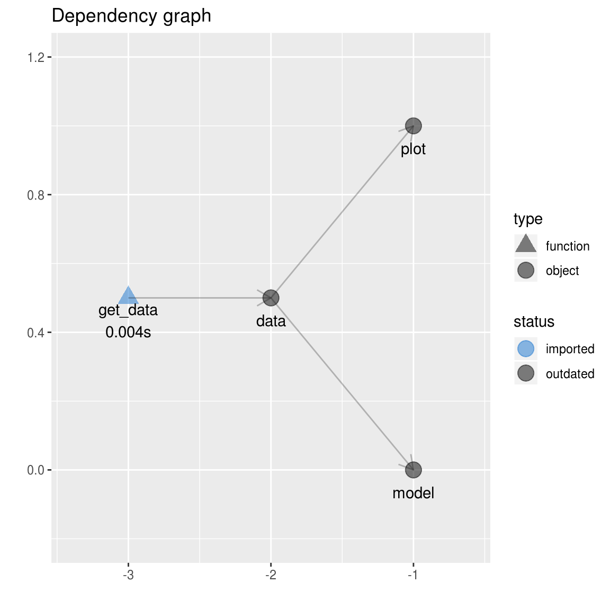

N Visualization with drake
Data analysis projects have complicated networks of dependencies, and drake can help you visualize them with vis_drake_graph(), sankey_drake_graph(), and drake_ggraph() (note the two g’s).
N.0.1 vis_drake_graph()
Powered by visNetwork. Colors represent target status, and shapes represent data type. These graphs are interactive, so you can click, drag, zoom, and and pan to adjust the size and position. Double-click on nodes to contract neighborhoods into clusters or expand them back out again. If you hover over a node, you will see text in a tooltip showing the first few lines of
- The command of a target, or
- The body of an imported function, or
- The content of an imported text file.
library(drake)
load_mtcars_example() # Get the code with drake_example("mtcars").
config <- drake_config(my_plan)
vis_drake_graph(config)To save this interactive widget for later, just supply the name of an HTML file.
To save a static image file, supply a file name that ends in ".png", ".pdf", ".jpeg", or ".jpg".
N.0.2 sankey_drake_graph()
These interactive networkD3 Sankey diagrams have more nuance: the height of each node is proportional to its number of connections. Nodes with many incoming connnections tend to fall out of date more often, and nodes with many outgoing connections can invalidate bigger chunks of the downstream pipeline.
Saving the graphs is the same as before.
sankey_drake_graph(config, file = "graph.html") # Interactive HTML widget
sankey_drake_graph(config, file = "graph.png") # Static image fileUnfortunately, a legend is not yet available for Sankey diagrams, but drake exposes a separate legend for the colors and shapes.
library(visNetwork)
legend_nodes()
## # A tibble: 10 x 6
## label color shape font.color font.size id
## <chr> <chr> <chr> <chr> <dbl> <int>
## 1 Up to date #228B22 dot black 20 1
## 2 Outdated #000000 dot black 20 2
## 3 In progress #FF7221 dot black 20 3
## 4 Failed #AA0000 dot black 20 4
## 5 Imported #1874CD dot black 20 5
## 6 Missing #9A32CD dot black 20 6
## 7 Object #888888 dot black 20 7
## 8 Function #888888 triangle black 20 8
## 9 File #888888 square black 20 9
## 10 Cluster #888888 diamond black 20 10
visNetwork(nodes = legend_nodes())N.0.3 drake_ggraph()
Powered by ggraph, these graphs are static ggplot2 objects, and you can save them with ggsave().
plan <- drake_plan(data = get_data(), model = data, plot = data)
plan
## # A tibble: 3 x 2
## target command
## <chr> <chr>
## 1 data get_data()
## 2 model data
## 3 plot data
get_data <- function(){}
config <- drake_config(plan)
drake_ggraph(config)
N.1 Underlying graph data: node and edge data frames
drake_graph_info() is used behind the scenes in vis_drake_graph(), sankey_drake_graph(), and drake_ggraph() to get the graph information ready for rendering. To save time, you can call drake_graph_info() to get these internals and then call render_drake_graph(), render_sankey_drake_graph(), or render_drake_ggraph().
str(drake_graph_info(config))
## List of 4
## $ nodes :Classes 'tbl_df', 'tbl' and 'data.frame': 4 obs. of 12 variables:
## ..$ id : chr [1:4] "data" "get_data" "model" "plot"
## ..$ deps :List of 4
## .. ..$ :<environment: 0x1786b050>
## .. ..$ :<environment: 0x175a8338>
## .. ..$ :<environment: 0x178fde70>
## .. ..$ :<environment: 0x179831e0>
## ..$ trigger :List of 4
## .. ..$ :<environment: 0x17a8a2c0>
## .. ..$ : NULL
## .. ..$ :<environment: 0x17a898e8>
## .. ..$ :<environment: 0x17aafd48>
## ..$ label : chr [1:4] "data" "get_data\n0.003s" "model" "plot"
## ..$ command : chr [1:4] "get_data()" NA "data" "data"
## ..$ status : chr [1:4] "outdated" "imported" "outdated" "outdated"
## ..$ type : chr [1:4] "object" "function" "object" "object"
## ..$ font.size: num [1:4] 20 20 20 20
## ..$ color : chr [1:4] "#000000" "#1874CD" "#000000" "#000000"
## ..$ shape : chr [1:4] "dot" "triangle" "dot" "dot"
## ..$ level : int [1:4] 2 1 3 3
## ..$ title : chr [1:4] "get_data()" "function () <br>{<br>}" "data" "data"
## $ edges :Classes 'tbl_df', 'tbl' and 'data.frame': 3 obs. of 5 variables:
## ..$ from : chr [1:3] "get_data" "data" "data"
## ..$ to : chr [1:3] "data" "model" "plot"
## ..$ file : int [1:3] 0 0 0
## ..$ arrows: chr [1:3] "to" "to" "to"
## ..$ smooth: logi [1:3] TRUE TRUE TRUE
## $ legend_nodes :Classes 'tbl_df', 'tbl' and 'data.frame': 4 obs. of 6 variables:
## ..$ label : chr [1:4] "Outdated" "Imported" "Object" "Function"
## ..$ color : chr [1:4] "#000000" "#1874CD" "#888888" "#888888"
## ..$ shape : chr [1:4] "dot" "dot" "dot" "triangle"
## ..$ font.color: chr [1:4] "black" "black" "black" "black"
## ..$ font.size : num [1:4] 20 20 20 20
## ..$ id : int [1:4] 2 5 7 8
## $ default_title: chr "Dependency graph"N.2 Visualizing target status
drake’s visuals tell you which targets are up to date and which are outdated.
config <- make(my_plan, jobs = 2, verbose = FALSE)
outdated(config)
## character(0)
sankey_drake_graph(config)When you change a dependency, some targets fall out of date (black nodes).
N.3 Subgraphs
Graphs can grow enormous for serious projects, so there are multiple ways to focus on a manageable subgraph. The most brute-force way is to just pick a manual subset of nodes. However, with the subset argument, the graphing functions can drop intermediate nodes and edges.
The rest of the subgraph functionality preserves connectedness. Use targets_only to ignore the imports.
Similarly, you can just show downstream nodes.
Or upstream ones.
In fact, let us just take a small neighborhood around a target in both directions. For the graph below, given order is 1, but all the custom file_out() output files of the neighborhood’s targets appear as well. This ensures consistent behavior between show_output_files = TRUE and show_output_files = FALSE (more on that later).
N.4 Control the vis_drake_graph() legend.
Some arguments to vis_drake_graph() control the legend.
To remove the legend altogether, set the ncol_legend argument to 0.
N.5 Clusters
With the group and clusters arguments to the graphing functions, you can condense nodes into clusters. This is handy for workflows with lots of targets. Take the schools scenario from the workflow plan guide. Our plan was generated with evaluate_plan(trace = TRUE), so it has wildcard columns that group nodes into natural clusters already. You can manually add such columns if you wish.
plan_template <- drake_plan(
school = get_school_data("school__"),
credits = check_credit_hours(all_schools__),
students = check_students(all_schools__),
grads = check_graduations(all_schools__),
public_funds = check_public_funding(public_schools__)
)
plan <- evaluate_plan(
plan = plan_template,
rules = list(
school__ = c("A", "B", "C"),
all_schools__ = c("school_A", "school_B", "school_C"),
public_schools__ = c("school_A", "school_B")
),
trace = TRUE
)
plan
## # A tibble: 14 x 8
## target command school__ school___from all_schools__ all_schools___f…
## <chr> <chr> <chr> <chr> <chr> <chr>
## 1 schoo… "get_s… A school <NA> <NA>
## 2 schoo… "get_s… B school <NA> <NA>
## 3 schoo… "get_s… C school <NA> <NA>
## 4 credi… check_… <NA> <NA> school_A credits
## 5 credi… check_… <NA> <NA> school_B credits
## 6 credi… check_… <NA> <NA> school_C credits
## 7 stude… check_… <NA> <NA> school_A students
## 8 stude… check_… <NA> <NA> school_B students
## 9 stude… check_… <NA> <NA> school_C students
## 10 grads… check_… <NA> <NA> school_A grads
## 11 grads… check_… <NA> <NA> school_B grads
## 12 grads… check_… <NA> <NA> school_C grads
## 13 publi… check_… <NA> <NA> <NA> <NA>
## 14 publi… check_… <NA> <NA> <NA> <NA>
## # ... with 2 more variables: public_schools__ <chr>,
## # public_schools___from <chr>Ordinarily, the workflow graph gives a separate node to each individual import object or target.
For large projects with hundreds of nodes, this can get quite cumbersome. But here, we can choose a wildcard column (or any other column in the plan, even custom columns) to condense nodes into natural clusters. For the group argument to the graphing functions, choose the name of a column in plan or a column you know will be in drake_graph_info(config)$nodes. Then for clusters, choose the values in your group column that correspond to nodes you want to bunch together. The new graph is not as cumbersome.
config <- drake_config(plan)
vis_drake_graph(
config,
group = "all_schools__",
clusters = c("school_A", "school_B", "school_C")
)As I mentioned, you can group on any column in drake_graph_info(config)$nodes. Let’s return to the mtcars project for demonstration.
Let’s condense all the imports into one node and all the up-to-date targets into another. That way, the outdated targets stand out.
N.6 Output files
drake can reproducibly track multiple output files per target and show them in the graph.
plan <- drake_plan(
target1 = {
file.copy(file_in("in1.txt"), file_out("out1.txt"))
file.copy(file_in("in2.txt"), file_out("out2.txt"))
},
target2 = {
file.copy(file_in("out1.txt"), file_out("out3.txt"))
file.copy(file_in("out2.txt"), file_out("out4.txt"))
}
)
writeLines("in1", "in1.txt")
writeLines("in2", "in2.txt")
config <- make(plan)
## target target1
## target target2
writeLines("abcdefg", "out3.txt")
vis_drake_graph(config, targets_only = TRUE)If your graph is too busy, you can hide the output files with show_output_files = FALSE. drake preserves dependency relationships induced by files, so there is now an edge from target1 to target2.
If target2 depends on the value of target1 in addition to its output files, the graph adds another edge.
plan <- drake_plan(
target1 = {
file.copy(file_in("in1.txt"), file_out("out1.txt"))
file.copy(file_in("in2.txt"), file_out("out2.txt"))
rnorm(5)
},
target2 = {
file.copy(file_in("out1.txt"), file_out("out3.txt"))
file.copy(file_in("out2.txt"), file_out("out4.txt"))
target1 + 5
}
)
config <- drake_config(plan)
vis_drake_graph(config, targets_only = TRUE)